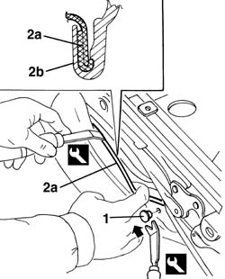
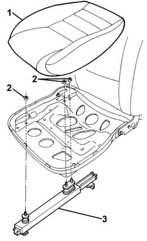
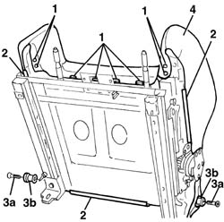
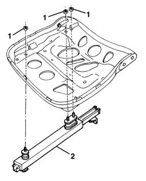

7045A72 front seat mount/guide - passenger`s side r r with seat removed
- Path
- Procedures > 70 FITTINGS > 7045 FRONT SEATS > 7045A front seat assembly > 7045A72 front seat mount/guide - passenger`s side r r with seat removed
- Kind
- repair procedure (removal / refitting; the operation number is the code)
- Applies to
- all engines; all production periods
- Interactive page
- https://sloeber94.github.io/elrnDB-a156/en/#/3238878
Applies to: all engines; all production periods
 Removing
Removing
 Refitting
Refitting7045A29 seat slide control lever - r r
7045A44 seat interior guard - r r
7065A14 ANCHORAGE ROD for , (one), front seat belt left or right - R.R.
1. Prise up the retaining stud from both sides of the seat using the special tool.
 | Name | Country |
|---|---|---|
1 | Scraper blade | 1.823.015.000 |
2. Prise up trim surround (2a) using the special tool.
Start at one end.
The detail in the figure shows a cross-section of profile (2b) securing trim (2a) in place.
| Name | Country |
|---|---|---|
1 | Scraper blade | 1.823.014.000 |

Applies to: all engines; all production periods
1. Fold down the seat and remove the seat padding and trim.
2. Undo the nuts.
3. Remove the mount/guide

Applies to: all engines; all production periods
Refitting
RemovingCheck that the mount/guide is intact and shows no signs of damage.
Refit the mount/guide and secure using nuts.
Refit the cushion.
Fit the trim surround.
Do up the retaining studs on both sides of the seat.
7065A14 ANCHORAGE ROD for , (one), front seat belt left or right - R.R.
Applies to: engines: 3.2 V6; all production periods; only with equipment: GTA
Removing
Refitting7045A29 seat slide control lever - r r
7045A44 seat interior guard - r r
7045A18 FRONT SEAT BACKREST ASSEMBLY (ONE), LEFT OR RIGHT - R.R.
7045A85 Front seat BACKREST COVER, left or right - R.R.
1. Open the cushion cover front perimeter retainers.
2. Release the profiles for the side and rear cushion cover perimeters.
3. Undo the bolts (3a) and remove the backrest attachment pins (3b).
4. Remove the cushion cover and upholstery.

Applies to: engines: 3.2 V6; all production periods; only with equipment: GTA
1. Unscrew the nuts.
2. Remove the support/guide.

Applies to: engines: 3.2 V6; all production periods; only with equipment: GTA
Refitting
RemovingCheck that the support/guide is not damaged.
Place the support/guide in position.
Tighten the nuts.
Place the cushion cover and upholstery in position.
Position the backrest attachment pins and tighten the bolts.
Fit the cushion cover side and rear perimeter profiles.
Close the cushion cover front perimeter retainers.
7045A85 Front seat BACKREST COVER, left or right - R.R.
7045A18 FRONT SEAT BACKREST ASSEMBLY (ONE), LEFT OR RIGHT - R.R.
Topics linked from this page (7)
- 7045A18 FRONT SEAT BACKREST ASSEMBLY (ONE), LEFT OR RIGHT - R.R.
- 7045A24 squab knob - r r
- 7045A29 seat slide control lever - r r
- 7045a43 seat exterior guard - r r
- 7045A44 seat interior guard - r r
- 7045A85 Front seat BACKREST COVER, left or right - R.R.
- 7065A14 ANCHORAGE ROD for , (one), front seat belt left or right - R.R.